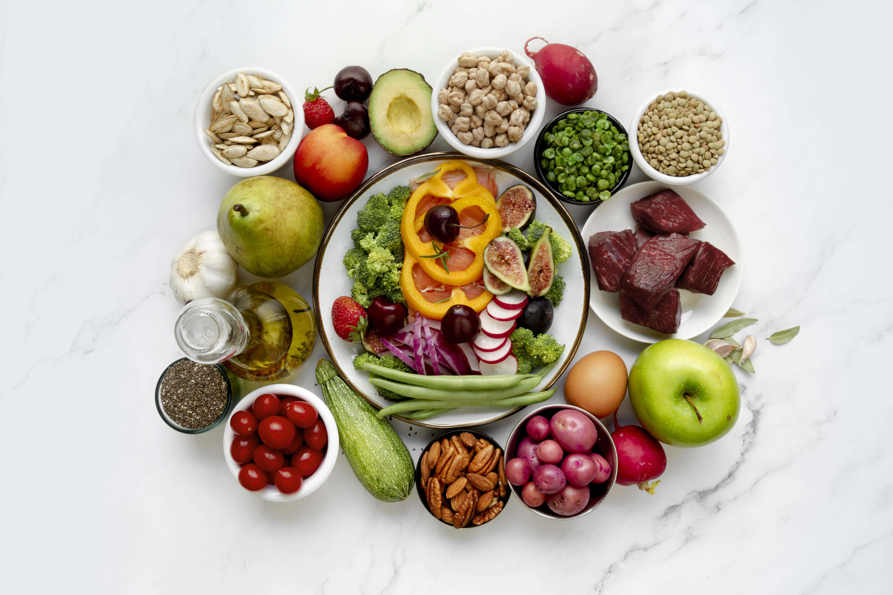

A alimentação limpa vai além da estética. Ela é um investimento na sua saúde, energia e bem-estar a longo prazo. Descubra como pequenas mudanças podem trazer grandes resultados para o seu corpo e mente.
Reduz inflamações e auxilia na prevenção de doenças.
Melhora disposição física e mental ao longo do dia.
Influência positiva no humor e foco.
Auxilia no emagrecimento saudável e composição corporal.
Fortalece o sistema imunológico.
Promove saúde sustentável a longo prazo.
